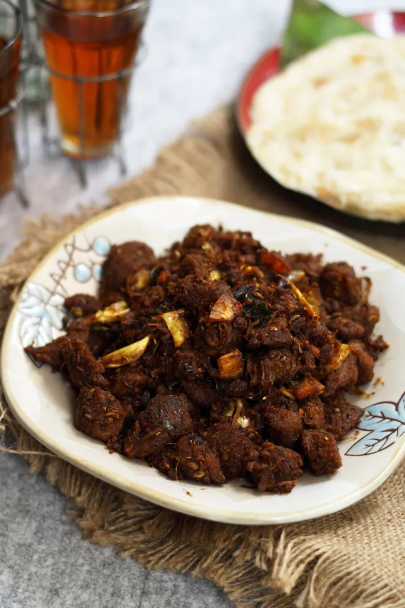

Kerala Beef Roast

Introduction:
Kerala Beef Roast is a traditional and aromatic dish from Kerala, India. It is made with succulent pieces of beef cooked in a rich blend of spices and coconut. This dish is known for its robust flavors and is often served with rice, appam, or parotta, making it a favorite among meat lovers in Kerala.
Ingredients:
- 500g beef, cut into bite-sized pieces
- 2 large onions, thinly sliced
- 2 tomatoes, chopped
- 1/4 cup grated coconut
- 4-5 garlic cloves, minced
- 1-inch ginger, minced
- 3-4 green chilies, slit
- 1 sprig curry leaves
- 1/2 teaspoon turmeric powder
- 1 tablespoon red chili powder
- 1 tablespoon coriander powder
- 1/2 teaspoon black pepper powder
- 1/2 teaspoon fennel seeds
- 1/2 teaspoon mustard seeds
- 2-3 tablespoons coconut oil
- Salt to taste
- Water
Instructions:
- In a large pan or pressure cooker, heat the coconut oil over medium heat.
- Add mustard seeds and fennel seeds. Allow them to splutter.
- Add sliced onions, green chilies, and curry leaves. Sauté until the onions turn golden brown.
- Add minced garlic and ginger. Sauté for a few more minutes until the raw smell disappears.
- Now, add the chopped tomatoes and cook until they become soft and mushy.
- Lower the heat and add turmeric powder, red chili powder, coriander powder, black pepper powder, and salt. Mix well to coat the onions and tomatoes with the spices.
- Add the beef pieces and stir to combine with the masala.
- Cover the pan or pressure cooker and cook the beef on low heat until it becomes tender. If using a pressure cooker, cook for about 4-5 whistles.
- In the meantime, in a separate pan, dry roast the grated coconut until it turns golden brown and releases a nutty aroma.
- Once the beef is cooked and tender, add the roasted coconut to the pan, and mix it well with the beef and spices.
- Cook for a few more minutes on low heat, allowing the flavors to meld together.
- Check the seasoning and adjust salt and spices according to your taste.
- Remove from heat and serve the delicious Kerala Beef Roast hot with rice, appam, or parotta.
Enjoy the delectable Kerala Beef Roast, and savor the rich and aromatic flavors of Kerala's cuisine!